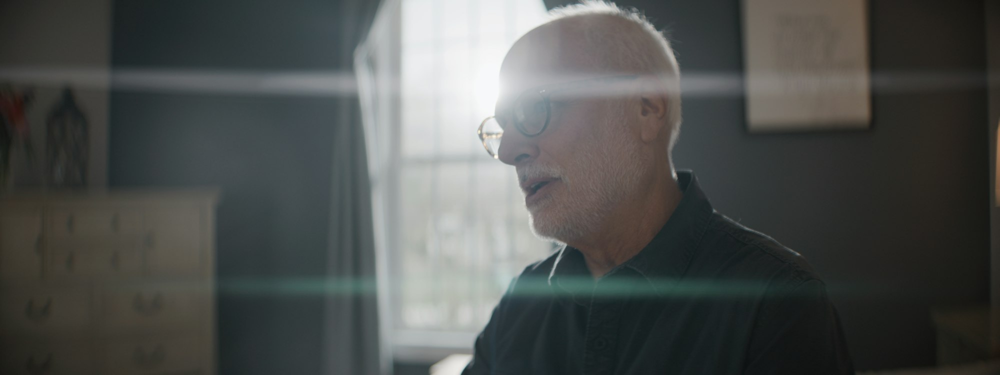
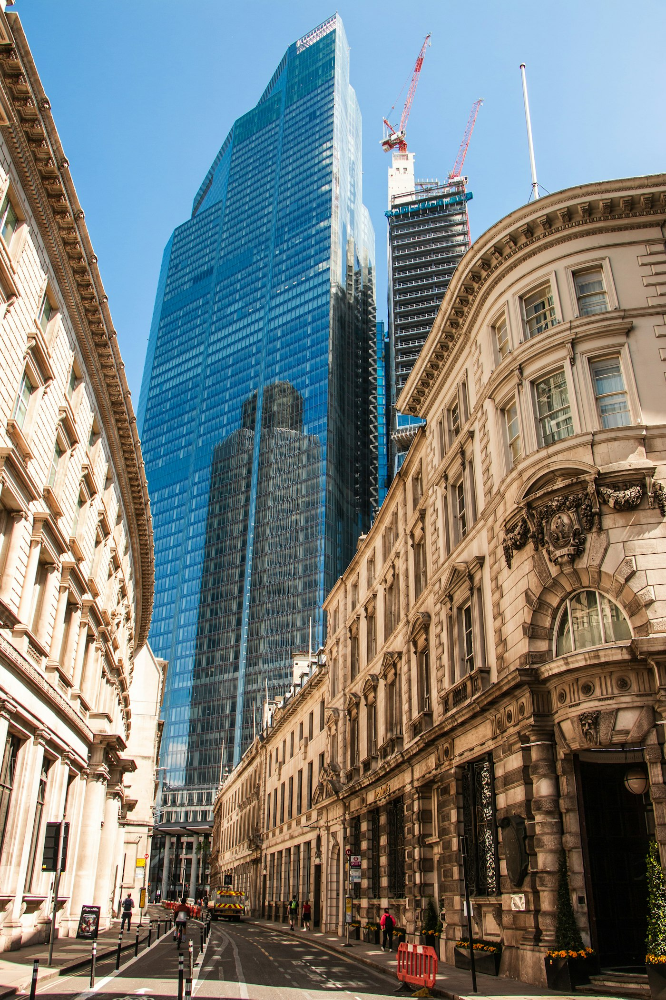

Indicative imagery
Southernhay's own office, Southernhay West, Exeter. Stand-in frame.
Southernhay Financial Planning
Led by Richard Wheeler and Chris Edmonds.
Long-term capital, acquisition support and central operations for ambitious IFA firms. Your name, your people and your client relationships stay yours.
Still trading as Southernhay Financial Planning, D’Arblay Wealth, Miraclair Wealth and Aspirations Financial Planning.

Hybrid takes a majority stake in a proven regional firm, which becomes a hub. The hub then grows by bringing nearby firms into its own operation, with Hybrid's capital and central teams behind every step.
Led by Richard Wheeler and Chris Edmonds.

Led by Adam Benskin and John Halley.
Led by Jo Leach.
Led by Andy Harris and Adam Palmer.
A confidential first discussion about where your firm is heading.